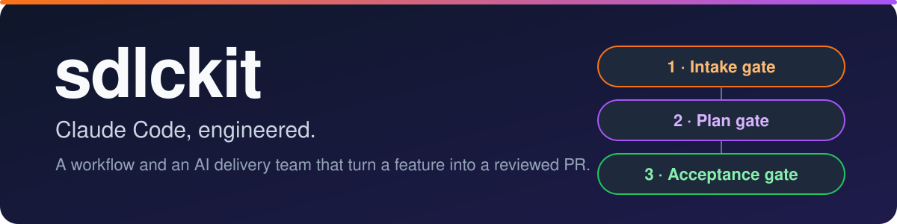

Claude Code, engineered.
An opinionated software delivery workflow for Claude Code, plus an AI delivery team that takes a feature from your request to a reviewed, tested pull request.
🚀 Install
claude plugin marketplace add arifshariati/sdlckit && claude plugin install sdlckit-team@sdlckitThis installs the whole kit. To install only the engineering workflow, run claude plugin install sdlckit-workflow@sdlckit.
Requirements: Claude Code, Node.js 22 or later, and git.
⚡ Quick start
In a repository you want to work on:
/sdlckit-workflow:eng-init # detect your stack and set the gate commands
/sdlckit-workflow:implement add rate limiting # make a change
/sdlckit-team:po saved payment methods # hand over a feature to the delivery team
/sdlckit-team:board # see where every epic and ticket stands🧩 What's included
🔧 sdlckit-workflow
Implement, fix, investigate, review and PR-readiness commands, with expert reviewers and the gate runner.
🗄️ sdlckit-backend
NestJS, PostgreSQL and Supabase experts and rulebooks.
🎨 sdlckit-frontend
React, React Native and Vite experts, plus ui-craft for Tailwind, shadcn and NativeWind.
☁️ sdlckit-infra
AWS, Terraform and AI agent experts and rulebooks.
🤖 sdlckit-team
The AI delivery team: product owner, architect, tech lead, engineers, QA and more, with /po, /refine, /deliver and /accept.
🔄 How it works
Agents plan, write and review. The project's own gate commands decide whether lint, typecheck and tests passed. No agent can declare a gate passed.